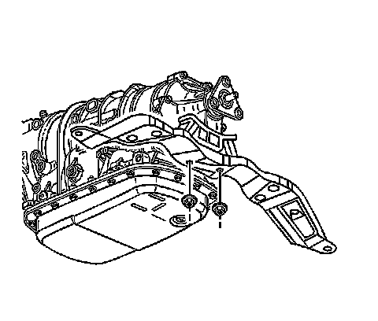
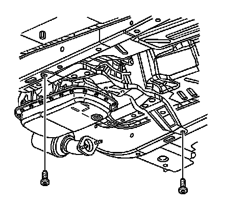
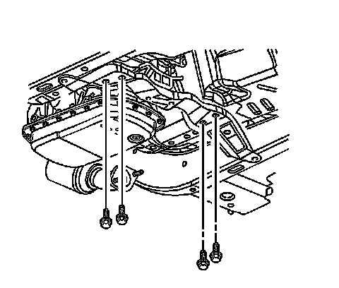
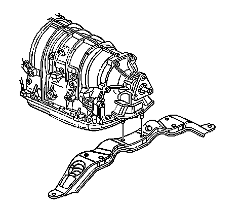

Transmission Support Replacement
Transmission Support Replacement
Removal Procedure
1.Raise and support the vehicle. Refer to Lifting and Jacking the Vehicle .
2.Remove and support the exhaust from the catalytic converters. Refer to Exhaust System Replacement .

3.Remove the transmission mount lower mounting nuts.
4.Support the transmission with a screw jack and block of wood.

5.Remove the outer transmission mounting bolts.

6.Remove the inner transmission mounting bolts.

7.Remove the transmission support from the vehicle.
Installation Procedure
1.Install the transmission support to the vehicle.
2.Install the inner transmission support mounting bolts. Do not tighten at this time.
Notice:Refer to Fastener Notice .
3.Install the outer transmission mounting bolts.
TightenTighten all the support bolts to 60 N �m (44 lb ft).
4.Remove the screw jack.
5.Install the transmission mount lower mounting nuts.
TightenTighten the nuts to 60 N �m (44 lb ft).
6.Install the exhaust system to the catalytic converters. Refer to Exhaust System Replacement .
7.Remove the support from the exhaust system.
8.Lower the vehicle.